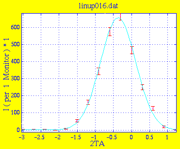
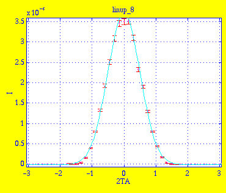
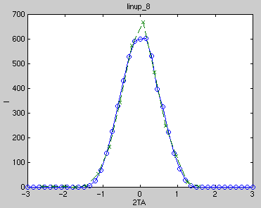

Amplitude 6.5484e+02 2.1555e+01 Centre -3.7169e-01 1.3064e-02 Width 4.8747e-01 1.0109e-02 Background 6.6746e-01 9.1453e-01 * Chi Squared 1.8953
This is the result linup_8.sim of simulation with 5e6 neutrons. Instrument definition linup-4.instr.

Amplitude 3.7180e-06 5.7305e-08 Centre -5.6794e-04 4.8724e-03 Width 5.0651e-01 4.4294e-03 Background -1.3198e-08 6.1467e-09 * Chi Squared 3.3509

The measured and simulated data are in good agreement.